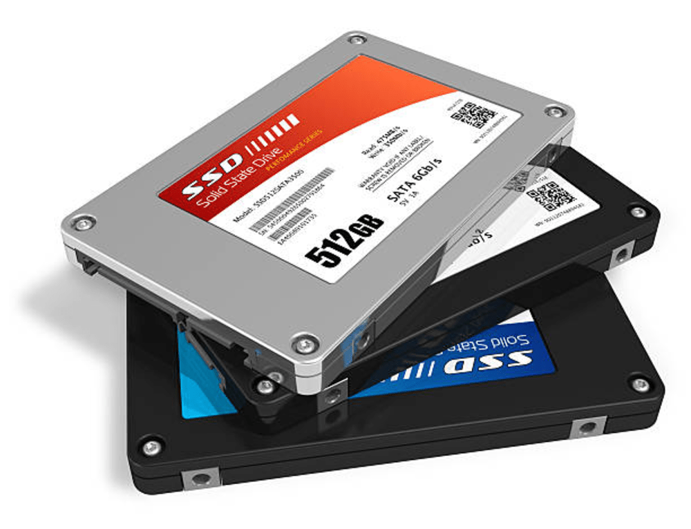

Solid state drives were first conceptualized in the early 1950's even before HDDs(hard disk drives) which were established in 1957. SSDs were not commercially until the 1980s however, and they were incredibly expensive. Because of the high cost and hardware limitations at the time SSDs did not see more widespread use until the 1990's
SSDs use flash memory which allows them access to data at a faster rate than HDDs which retrieve data via rotating metal platter. It's also substantially quieter. Many people prefer to use HDDs due to the lower cost to storage ratio compared to SSDs. SSDs are continuously improving and will soon outpace HDDs in the near future. Another thing that makes SSDs a desired computer component is their flexibility, not physically speaking though. They can be installed in 2 ways, to the motherboard directly or via the power supply and mounted to the case.

I believe that the SSD most closely correlates with ‘long term memory’ interference to biological functions. The SSD is responsible for storing a computers operating system and all the installed application software. The SSD is responsible for storing everything permanently, unlike RAM which deletes memory as soon as it's finished using it.